Industrial Metaverse Design Methodologies: A Comprehensive Literature Review
Xiao, X., Roy, R., & Omidyeganeh, M. International Journal of Computer Integrated Manufacturing.
Publications & Activities
Xiao, X., Roy, R., & Omidyeganeh, M. International Journal of Computer Integrated Manufacturing.
Xiao, X., Roy, R., Omidyeganeh, M., & Mahmood, M. 22nd International Conference on Manufacturing Research 2025, Birmingham, UK.
Mahmood, M., Roy, R., Hide, P., & Xiao, X. 22nd International Conference on Manufacturing Research 2025, Birmingham, UK.
Xiao, X., Heinzel, T., Lee Smith, M., & Mele, E. BioDesign Conference 2026.
Xiao, X., Roy, R., Omidyeganeh, M., & Morton, P. Computers in Industry.
Xiao, X., Roy, R., & Mahmood, M. Virtual Reality (Springer).
Presented: Platform-Based Design Methodologies for Cyber-Physical Systems in the Industrial Metaverse.
Presented: Design of an Industrial Metaverse using AR/VR Technologies.
Presented: How can data be used to build an industrial metaverse?
City St George's, University of London. Delivered undergraduate guest lectures on immersive manufacturing optimisation, digitalisation, and contemporary industrial practices.
City St George's, University of London. Taught Mechanics of Materials, Manufacturing, Engineering Design, Siemens NX, and supervised MSc VR Development projects.
Reviewer for TEI 2026, IASDR 2025, and OzCHI 2025. Academic volunteer at ETRA 2023. Member of IET and iED.
Best Research Award, 2nd City SST Research Conference (2024); Silver Star Award, G CROSS Innovation Competition (2021); National Grand Prize, Challenge Cup Scientific Design Contest (2019); Xu Beihong Scholarship for Academic Excellence (2020).
Field Notes
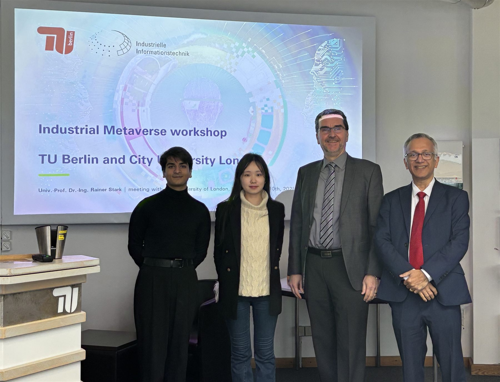
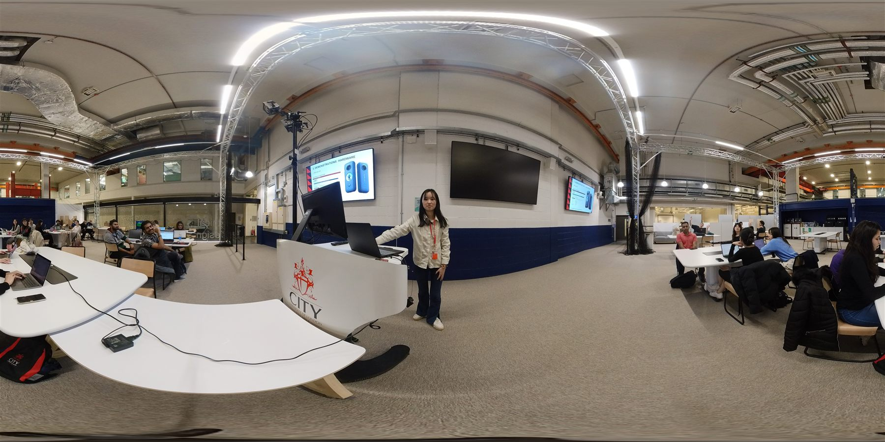
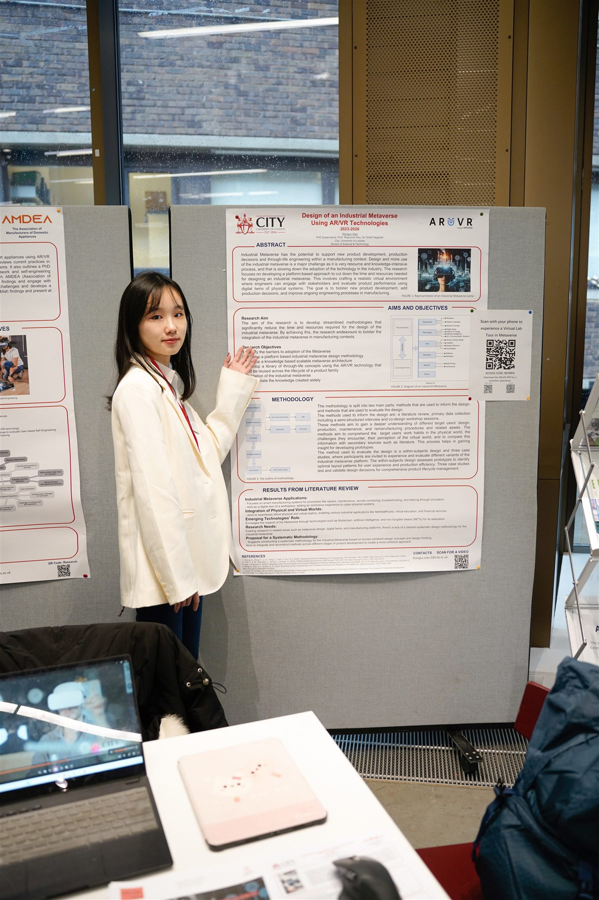
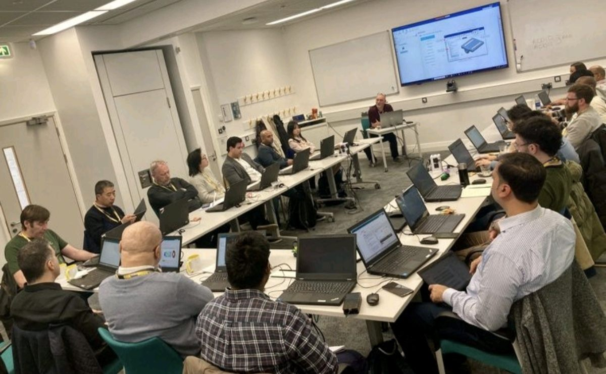
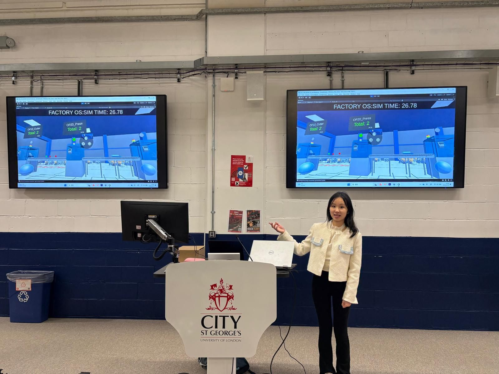
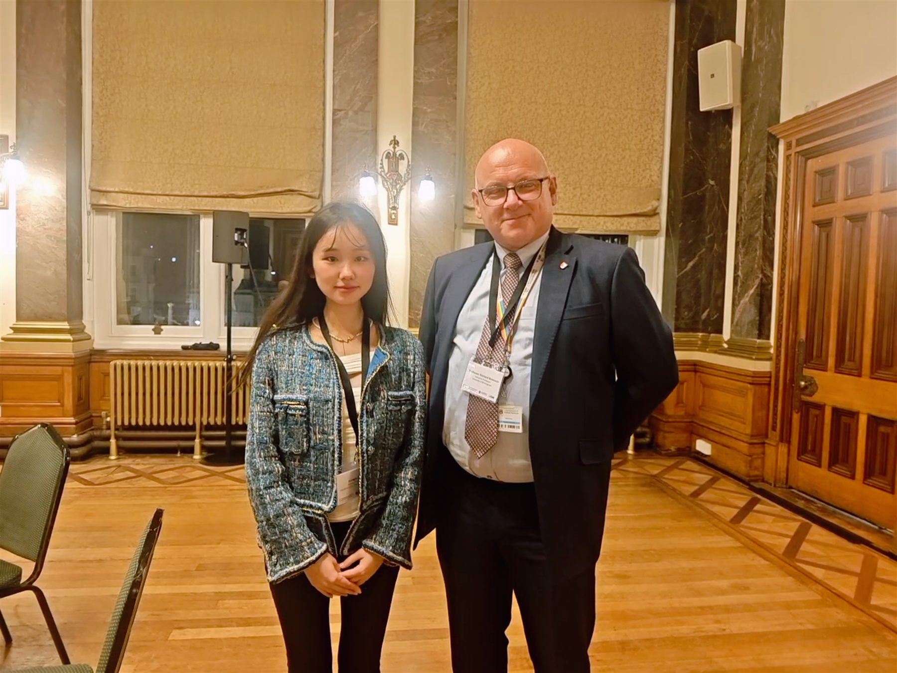
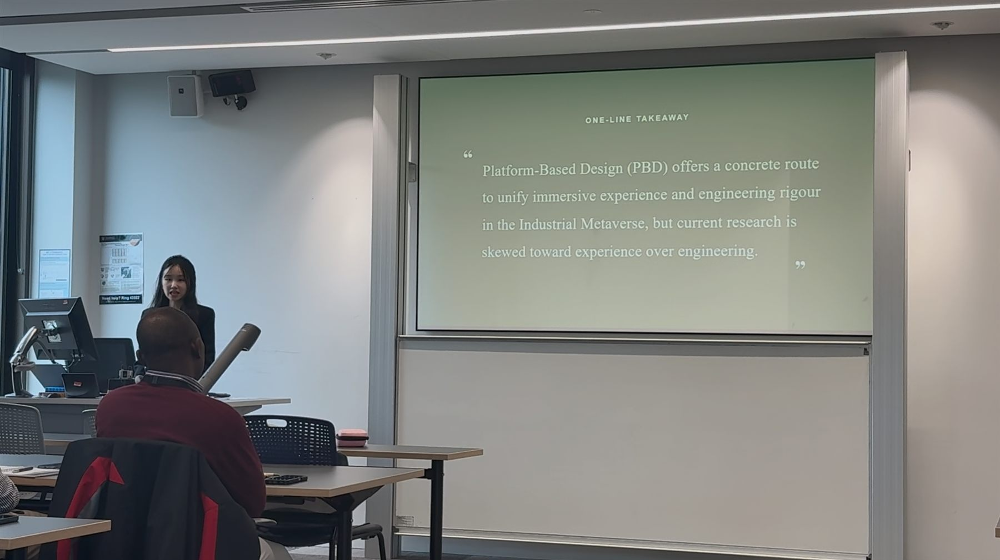
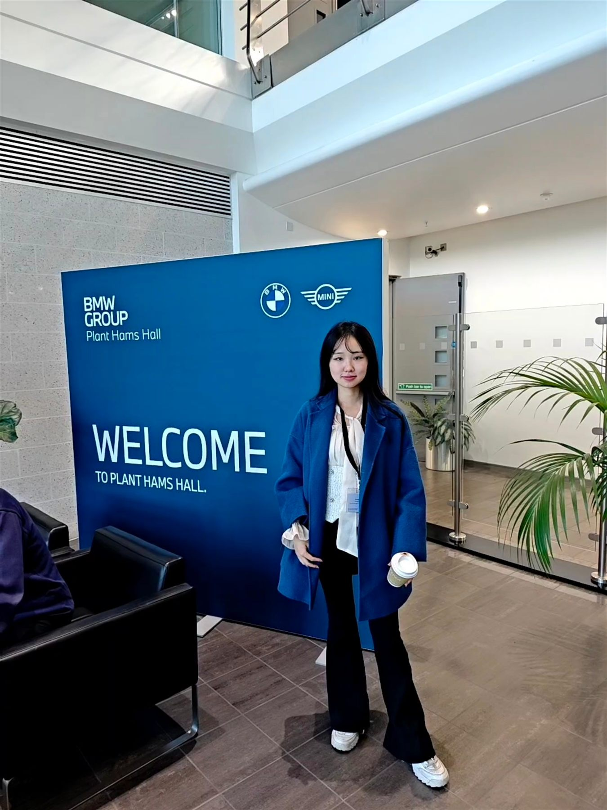
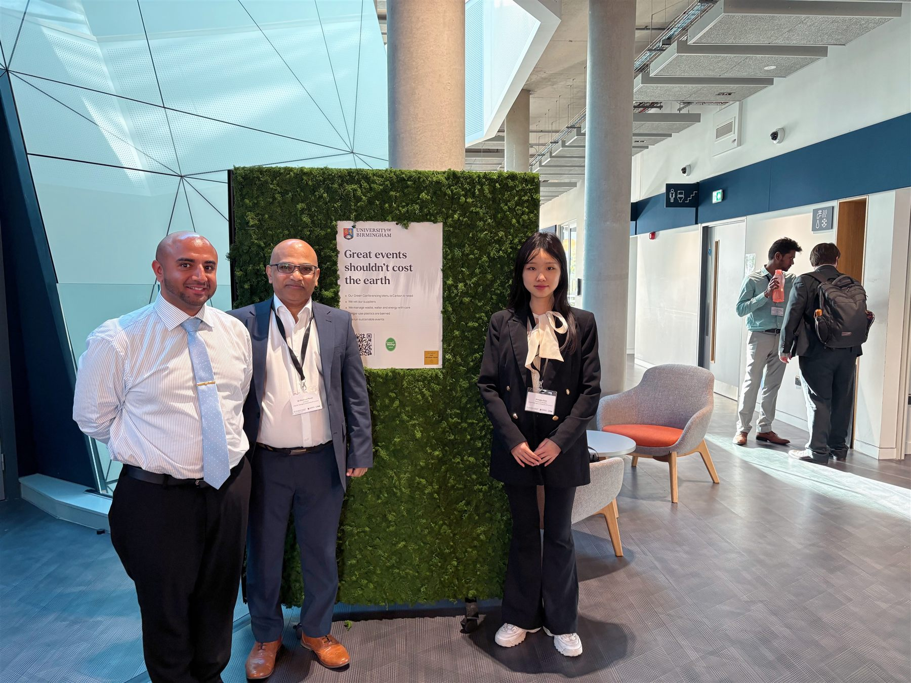
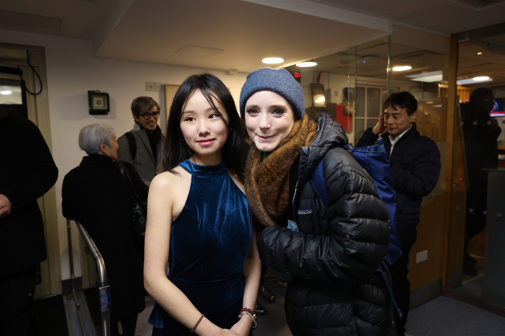
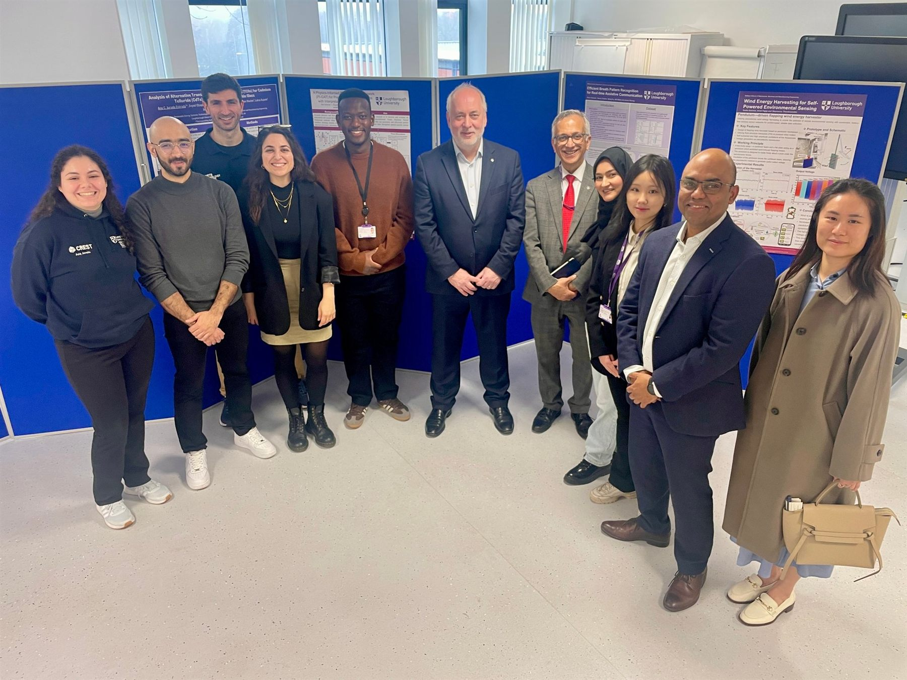
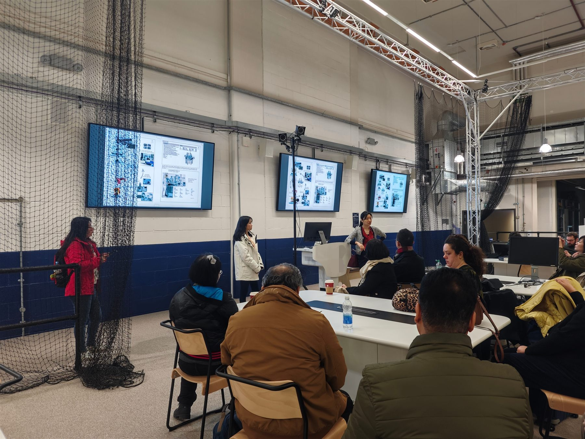
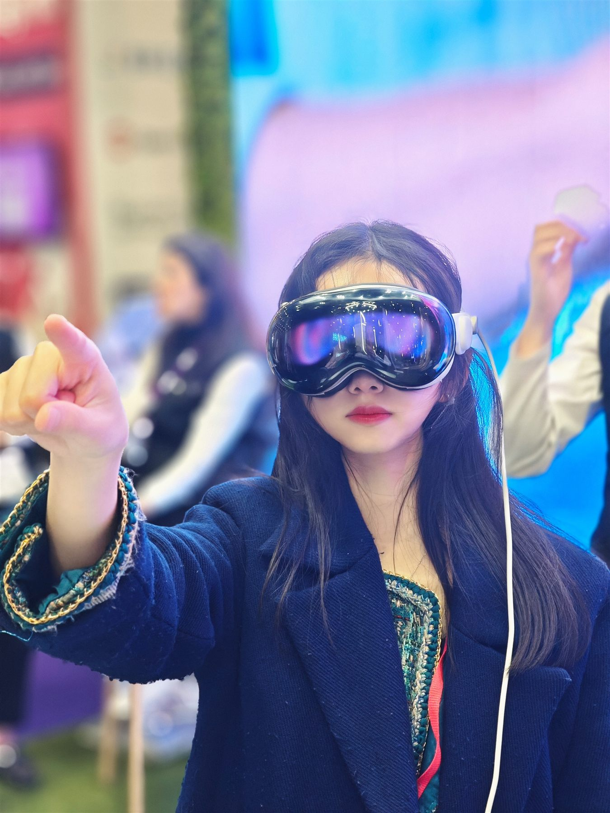